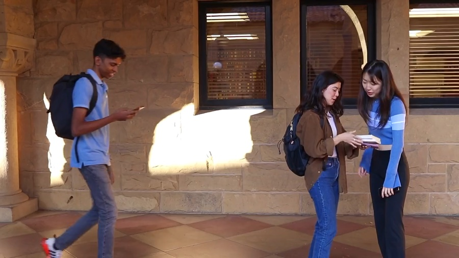
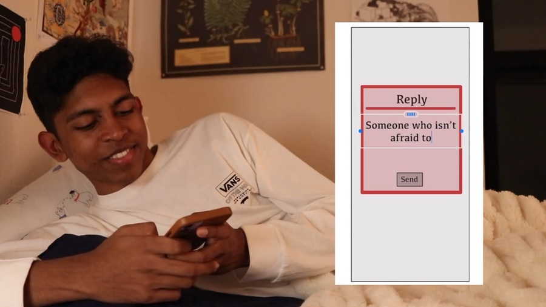
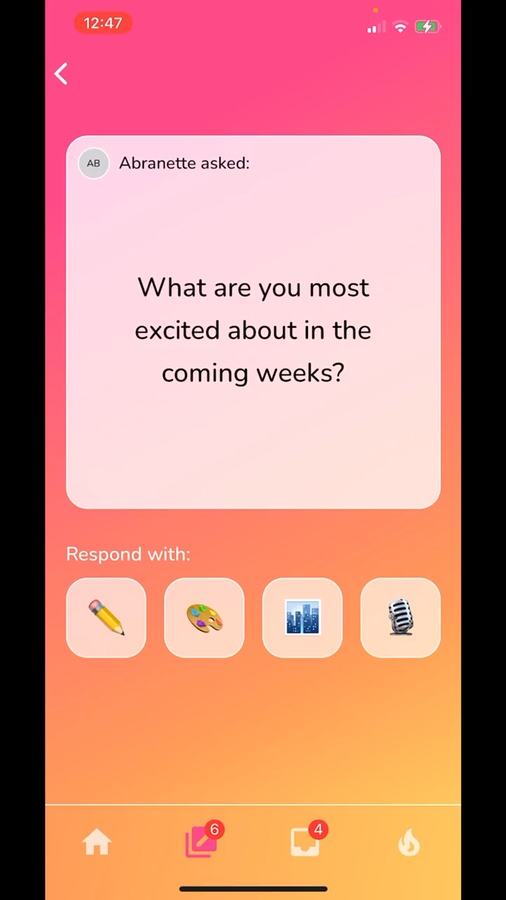
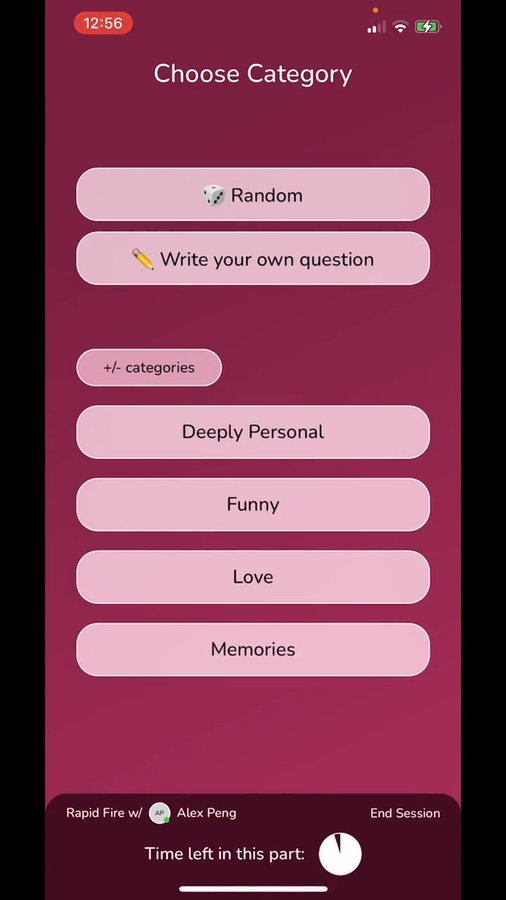

Cherry App
Make your long distance relationships a little bit sweeter.
Once you leave home for college, 90% of your time with family is already behind you. Even in the age of technology, truly connecting with long-distance loved ones is harder than it seems. Whether parents, siblings, friends, or significant others, these relationships make the world go round. Inspired by this yearning to reconnect, we designed Cherry, a social app that generates intimate daily questions and invites creative responses, making long-distance connection simple, meaningful, and fun. Rooted in love and friendship, Cherry brings you back to the people who make life worth living.
meet Cherry


Take a sweet peek inside the app!
Project detailsIn a 10-week design sprint, teams of 4 design and build an app that tackles a unique set of needs.
the demo — see it in action


Acknowledgements
Thanks to my team — Gautham Raghupathi, Annie Ma, and Jason Ping — for being a blast to work with and teaching me so much about teamwork, keeping a light heart when the going gets tough, and needfinding to no end!